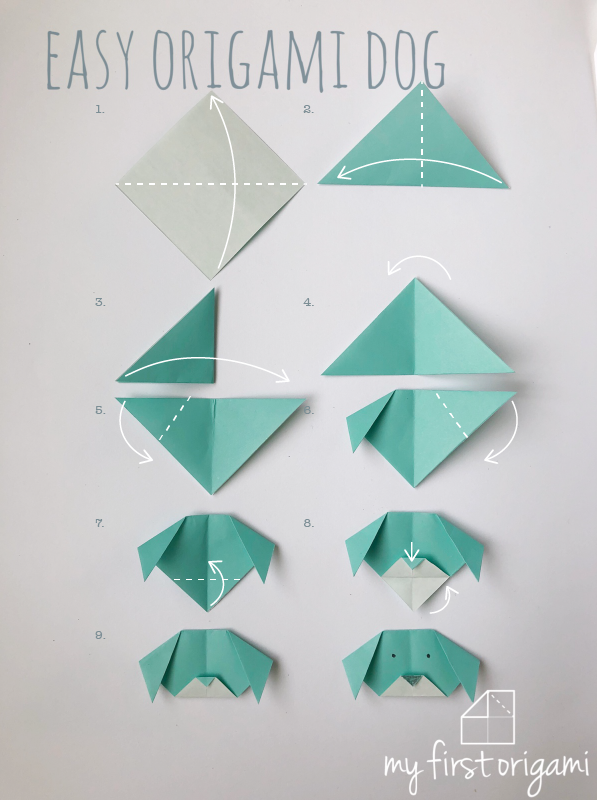

Step 1: Start with a square piece of origami paper. If you only have regular 8.5x11 paper, follow 2nd spet to make a square sheet.
Step 2: Fold paper in half by folding the top corner to the bottom corner.
Step 3: Fold the triangle in half by folding the left corner to the right corner.
Step 4: Unfold.
Step 5: Let's make the ears! Fold both corners of the triangle down at an angle like you see in the picture.
Step 6: The head's too pointy! Fold the top corner to the back.
Step 7:Unless you want a pointy chin, fold the bottom corner back also.
Step 8:Give your dog a face by drawing the eyes and nose!
